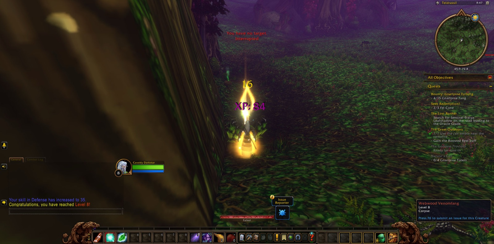
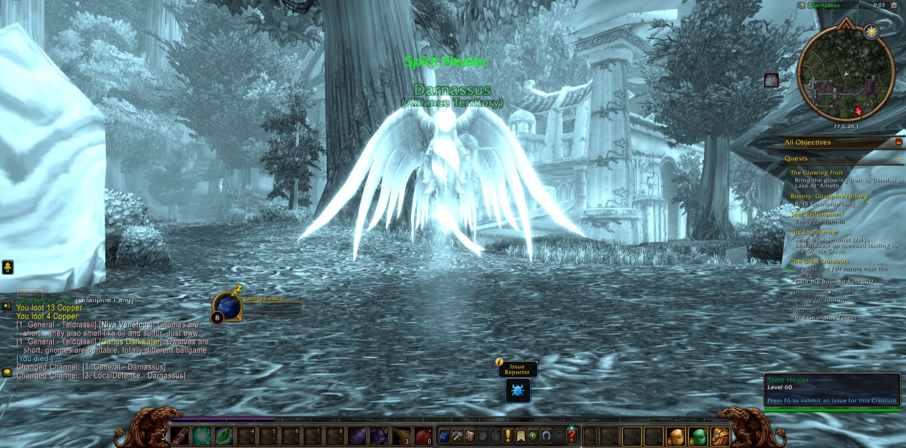
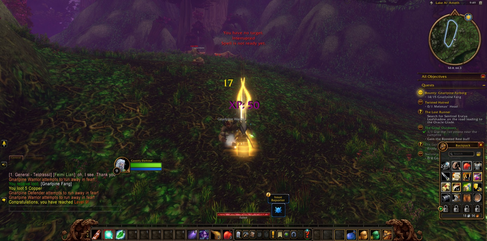
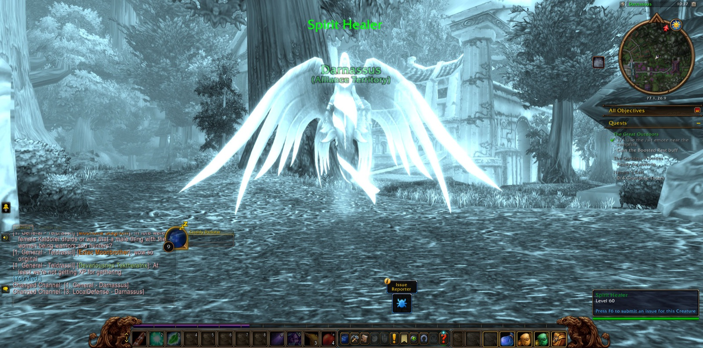
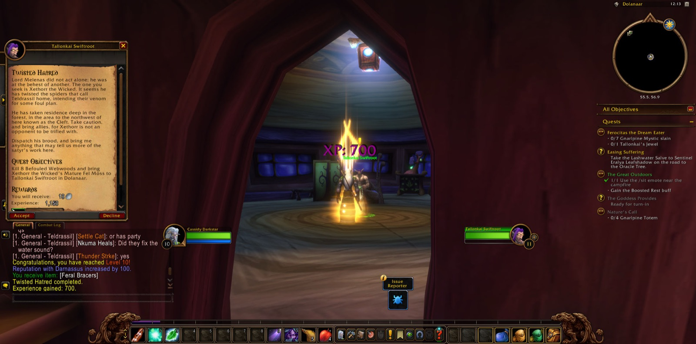
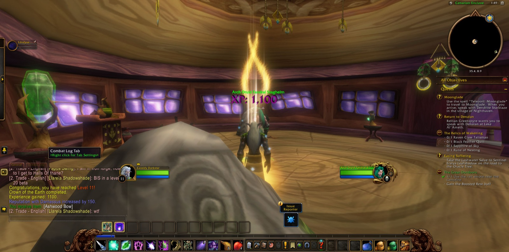
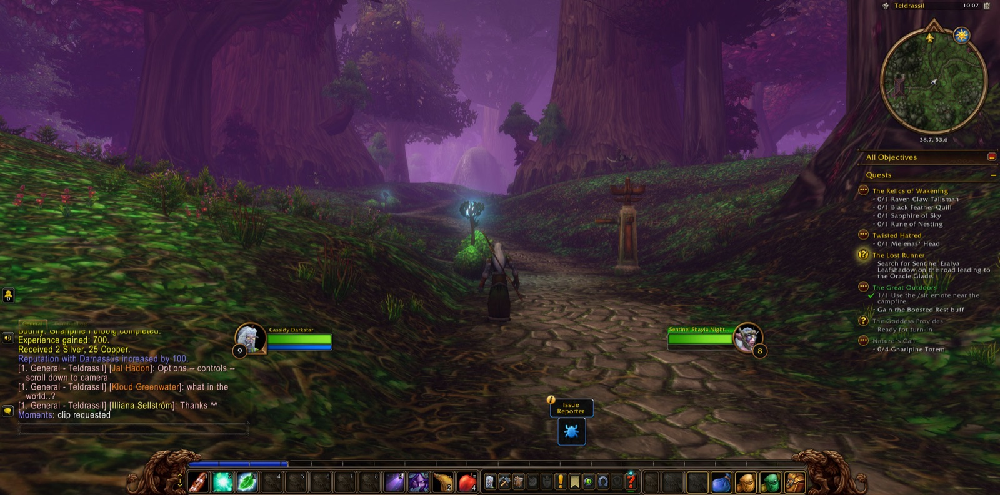

Cassidy Darkstar went out again from Dolanaar into the wide lands of Teldrassil. His first errand was "Seek Redemption!", and when the three fel cones were gathered he took up "The Glowing Fruit" in Gnarlpine Hold and bore it to Denalan at Lake Al'Ameth. Between those errands he walked the terraces of Darnassus and completed "Eyes of the Sentinels" in the Temple of the Moon. He brought soft nightsaber pelts back to Dolanaar. He gathered fifteen Gnarlpine fangs for the bounty on the furbolgs. At The Oracle Glade he ended the matter of "The Lost Runner" and took from the Bloodfeather harpies the six belts that "The Enchanted Glade" required. A fall came to him along the way, as falls come to all who walk far. He rose, went on, and did not count it.


Then the errands of the Great Tree drew him back to Lake Al'Ameth, where he gathered the dewy fronds of the lashers so that the Lashwater Salve might be made. He carried the Emerald Dreamcatcher back from Starbreeze Village. At Fel Rock Lord Melenas fell, and Threggil with him, and there Cayde the hunter and Koalla the druid stood with Cassidy for a short while before the road parted them. In The Cleft he cleansed the Befouled Webwood. With Doom the hunter at his side, and Marta the warrior briefly, he overcame Xethorr the Wicked and took the Mature Fel Moss. He carried the Gnarlpine totems home through Shadowglen, and at Aldrassil he completed "The Goddess Provides". Beyond Starbreeze Village, Eo the hunter joined him against the Gnarlpine Mystics. Harcos, Thunder and Iwill then stood with him when Ferocitas the Dream Eater was slain, and Tallonkai's Jewel was recovered.


In the Cenarion Enclave he answered "Heeding the Call" and received a new errand bearing the name of Moonglade. There he came into his full strength of the eleventh step, having begun the day at the seventh. "Crown of the Earth", long carried, was brought to its end. The vessel passed to Arch Druid Fandral Staghelm, then to Lariia in the Temple of the Moon, and at last to Tyrande Whisperwind herself. It was a small errand on its face, yet it passed through great hands. Afterwards he returned to Denalan, and with Kaner and Volpixi beside him he cut the Gargantuan Tumor from Oakenscowl. Subrin, Lunaria, Edrelyse and Rhavara had also shared parts of that road with him.

Last he went down into Ban'ethil Barrow Den. Mil the priest kept faith with him there longest of all his companions, and Belriel came for a brief while. Greenpaw was slain, and the four Relics of Wakening were recovered. Word came to him of the Sleeping Druid and of Ursal the Mauler. At The Oracle Glade he delivered the salve to Sentinel Eralya Leafshadow. Beside Not the warrior he laid low Hatescreech and Windmistress Gaedress and took their amulets. There he also received a charge to bring a Shimmering Frond to Denalan. Then Cassidy turned once more toward the long road of Teldrassil, which still ran on before him under the Great Tree.
